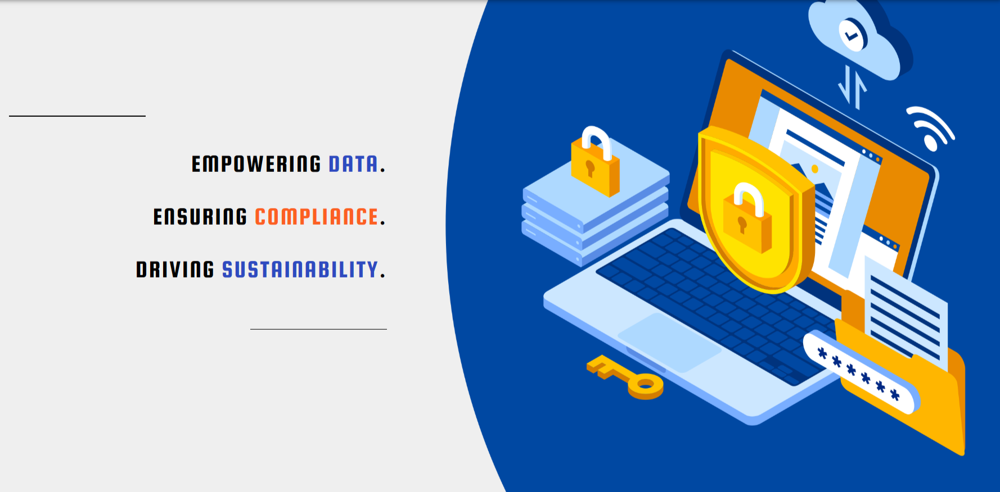
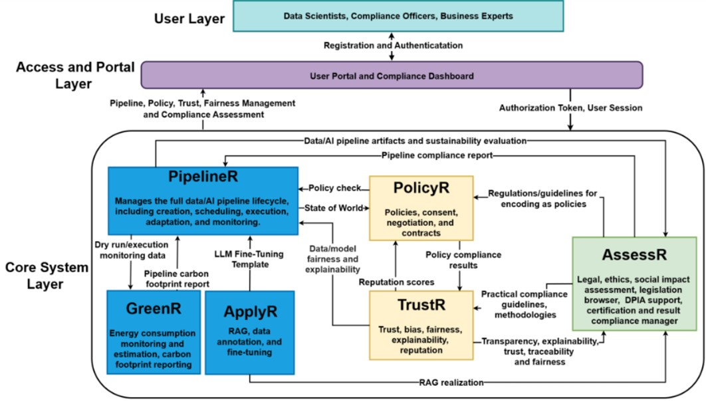

<div class="page-content">
  <div style="background: white; padding: 3rem; border-radius: 12px; box-shadow: 0 4px 12px rgba(0,0,0,0.1);">

    <!-- Logo -->
    <div style="text-align: center; margin-bottom: 2rem;">
      
    </div>

    <h1 style="text-align: center;">Welcome to the DataPACT Tools Catalogue</h1>

    <p style="text-align: center; max-width: 900px; margin: auto;">
      DataPACT provides a compliance-by-design ecosystem for data and AI operations. 
      The platform supports organisations in developing trustworthy, ethical, and environmentally sustainable 
      data and AI pipelines by embedding compliance, privacy, fairness, and transparency from the earliest design stages.
    </p>

    <!-- Images Side by Side -->
    <div style="margin-top: 2rem; display: flex; gap: 2rem; justify-content: center; flex-wrap: wrap;">

      

      

    </div>

    <p style="margin-top: 2rem;">
      The DataPACT platform provides an integrated toolbox and framework that helps developers, compliance experts, 
      and organisations design, deploy, and operate data and AI pipelines aligned with regulatory, ethical, and 
      sustainability requirements. The tools support compliance assessment, transparency, explainability, 
      fairness evaluation, and environmental impact monitoring across the entire lifecycle of data and AI solutions.
    </p>

    <!-- Info Cards -->
    <div style="display: grid; grid-template-columns: repeat(auto-fit, minmax(300px, 1fr)); gap: 2rem; margin-top: 2rem;">

      <div style="background: #f8f9fa; padding: 2rem; border-radius: 8px;">
        <h3>Navigate DataPACT Tools</h3>
        <p>
          Explore the available tools using the sidebar. The catalogue provides access to pipeline management, 
          compliance assessment, trust and fairness evaluation, sustainability monitoring, and AI model adaptation capabilities.
        </p>
      </div>

      <div style="background: #f8f9fa; padding: 2rem; border-radius: 8px;">
        <h3>Compliance and Trust by Design</h3>
        <p>
          DataPACT helps organisations address legal, ethical, and environmental requirements while enabling 
          innovation. The platform supports regulatory compliance, privacy protection, trustworthy AI development, 
          and transparent data operations across multiple application domains.
        </p>
      </div>

    </div>

  </div>
</div>
